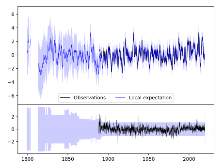
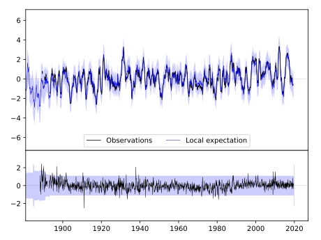
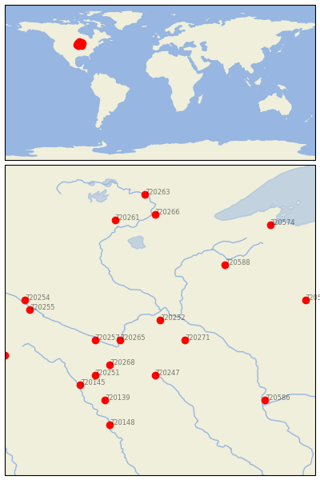

FARMINGTON 3 NW [USA]


| Neighbour | Name | Country | Distance | Lon/Lat | Years |
|---|
| 720252 | FARMINGTON 3 NW | USA | 0 | -93.2, 44.7 | 1888-2019 |
| 720271 | ZUMBROTA | USA | 59 | -92.7, 44.3 | 1891-2019 |
| 720265 | ST PETER | USA | 77 | -94.0, 44.3 | 1877-2019 |
| 720257 | NEW ULM 2 SE | USA | 112 | -94.5, 44.3 | 1864-2019 |
| 720247 | ALBERT LEA 3 SE | USA | 122 | -93.3, 43.6 | 1885-2019 |
| 720268 | WINNEBAGO | USA | 127 | -94.2, 43.8 | 1893-2019 |
| 720588 | SPOONER AG RES STN | USA | 159 | -91.9, 45.8 | 1893-2019 |
| 720251 | FAIRMONT | USA | 160 | -94.5, 43.6 | 1887-2019 |
| 720145 | ESTHERVILLE 2 N | USA | 192 | -94.8, 43.4 | 1893-2019 |
| 720139 | ALGONA 3 W | USA | 198 | -94.3, 43.1 | 1861-2019 |
| 720255 | MONTEVIDEO 1 SW | USA | 206 | -95.8, 44.9 | 1889-2019 |
| 720254 | MILAN 1 NW | USA | 217 | -95.9, 45.1 | 1893-2019 |
| 720581 | MEDFORD | USA | 232 | -90.3, 45.1 | 1890-2019 |
| 720261 | PINE RIVER DAM | USA | 233 | -94.1, 46.7 | 1887-2019 |
| 720266 | SANDY LAKE DAM LIBBY | USA | 233 | -93.3, 46.8 | 1892-2019 |
| 720586 | PRAIRIE DU CHIEN | USA | 244 | -91.1, 43.1 | 1822-2019 |
| 720148 | FORT DODGE 5NNW | USA | 246 | -94.2, 42.6 | 1851-2019 |
| 720262 | PIPESTONE | USA | 258 | -96.3, 44.0 | 1893-2019 |
| 720574 | ASHLAND EXP FARM | USA | 271 | -91.0, 46.6 | 1894-2019 |
| 720263 | GRAND RPDS FOREST LA | USA | 278 | -93.5, 47.2 | 1893-2019 |